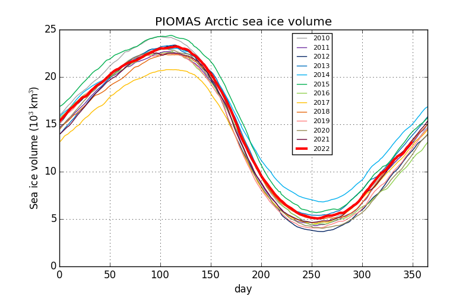

All images and data below are calculated from the PIOMAS gridded sea ice thickness data provided by the Polar Science Center (Zhang et al.)
Sea ice volume spreadsheets
Latest sea ice thickness maps


Sea ice volume graphs


Fram Strait export
Definition of Fram Strait (yellow line) and extension to Franz Josef Land (red line):